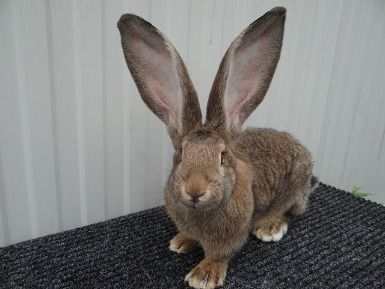
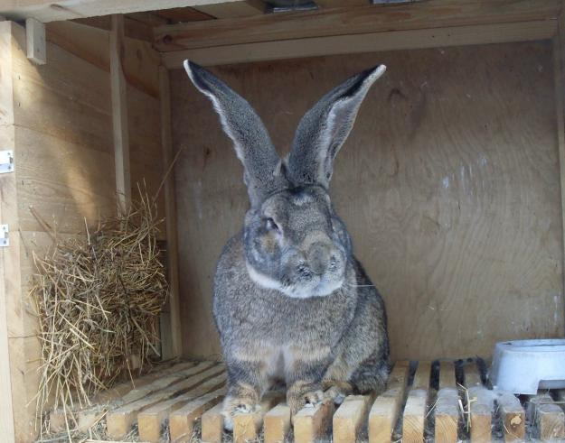
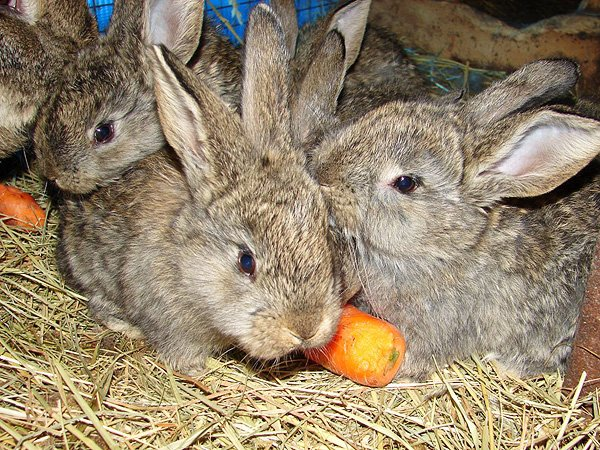

Одна з найбільших порід кролів у світі. До 15 кг живої ваги, спокійний характер і м'ясо-шкуркова продуктивність вищого класу.

Різен (нім. Deutsche Riesen — «Німецький Велетень») — порода кролів, виведена в Німеччині шляхом тривалої селекції на основі Бельгійського фландра. Фландр потрапив до Німеччини ще у XIX столітті, і місцеві тваринники розпочали цілеспрямовану роботу з покращення м'ясних та конституційних характеристик цієї тварини.
Результатом багаторічної селекції стала самостійна порода — Різен, яка помітно перевершила вихідний фландр як за масою тіла, так і за загальними габаритами. У ній збережено флегматичний, урівноважений характер бельгійського прабатька, але досягнуто суттєво вищих продуктивних показників.
Офіційне визнання порода отримала в Німеччині наприкінці XIX — на початку XX ст. Сьогодні Різен поширений у Центральній та Східній Європі, в Україні, а також утримується як великий домашній улюбленець завдяки спокійній вдачі.
Бельгійський фландр потрапляє до Німеччини. Початок адаптаційної селекції.
Виділення Різена як самостійної породи. Перші племінні записи.
Офіційна стандартизація породи. Поширення по Центральній Європі.
Одна з найбільших порід кролів у світі. Популярна в Україні та Європі.

Масивний, довгий — до 70–75 см. Широка грудна клітина (обхват до 42 см). Добре розвинена мускулатура вздовж хребта і крупу.
Голова велика, широка, з виразними щоками. Вуха пряме, вертикальні, щільні, завдовжки 15–20 см. Вибраковують особин з вухами коротше 17 см.
Прямі, широко поставлені, з добре розвиненою мускулатурою. Міцні ступні — обов'язкова умова стандарту.
Густа, рівна, завдовжки до 4 см. Щільна, добре прилягає до тіла. Якісна шкурка великого формату — одна з переваг породи.
Переважно карі, відповідають забарвленню. У особин із жовтим (золотим) забарвленням — янтарного відтінку.
| Показник | Значення | Примітка |
|---|---|---|
| Жива маса дорослої особини | 7–10 кг | Рекордні екземпляри — до 12–15 кг |
| Довжина тіла | 65–75 см | Племінний мінімум — 65 см |
| Обхват грудей | до 42 см | Широка грудна клітина — стандарт |
| Довжина вух | 15–20 см | Нижня межа відбору — 17 см |
| Вихід м'яса з туші | 55–60% | М'ясо-шкуркова порода |
| Кількість кроленят в окролі | 8–12 голів | Середнє — 10 кроленят |
| Вік першого парування самки | 8–10 місяців | Статева зрілість пізня |
| Забійний вік | 9–12 місяців | Повільніший ріст, ніж у м'ясних порід |
Різен — порода вимоглива до умов. Через значну масу тіла та розміри тварини потребують значно більшого простору, ніж середні породи. Недотримання норм утримання веде до травм кінцівок, ожиріння та зниження продуктивності.
Мінімальний розмір клітки для одної особини — 1,2 × 1,0 м, висота 0,6 м. Для самки з кроленятами гніздовий відсік збільшується вдвічі. Тісна клітка веде до деформацій кінцівок і стресу.
Через велику масу тіла Різени схильні до пододерматиту — запалення ступень від сітчастої підлоги. Обов'язкові дерев'яні трапи або товстий шар сіна (10–15 см). Сітка без захисту — неприпустима.
Порода витривала до холоду, добре переносить зиму при якісному укритті. Критична температура — нижче −15°C без утеплення. Перегрів переноситься значно гірше: при +30°C потрібне примусове охолодження та доступ до води.
Клітки чистять не рідше 2 разів на тиждень. Через великий об'єм тіла та інтенсивне виділення — частіше, ніж у дрібних порід. Сирість у клітці — пряма причина респіраторних захворювань та грибкових ускладнень.
Оптимальний світловий день — 16 годин для самок у репродуктивний період. Постійна темрява пригнічує статеву активність. Природне освітлення — пріоритет; штучне — допустиме доповнення взимку.
Самців утримують окремо від самок та молодняку — після досягнення 4-місячного віку. Різени спокійні, але самці при наявності суперника стають агресивними. Кроленят відсаджують від матері у 45–60 днів.
Через велику масу тіла Різени споживають значно більше корму, ніж середні породи. Добовий раціон дорослої особини формується з урахуванням сезону, стану тварини (ріст, сукрільність, лактація) та індивідуальної схильності до ожиріння.
Сіно лугове або бобово-злакове — постійний доступ. Нестача клітковини веде до порушень моторики кишківника. Для Різена добова норма сіна — від 400 до 600 г.
У сезон: свіжа трава, кропива (ошпарена), листя кульбаби, пагони дерев. Вводити поступово, уникаючи різкого переходу з сухого раціону. Не давати мокру або підгнилу зелень — ризик здуття.
Дорослому — 200–300 г/добу: вівсяна крупа, ячмінь, комбікорм для кролів. Під час відгодівлі або лактації норму збільшують на 20–30%. Надлишок зерна без клітковини веде до ожиріння.
Морква, буряк, топінамбур, кабачок — 200–400 г/добу. Картоплю дають лише варену та в обмеженій кількості. Капуста в надлишку — можлива причина метеоризму.
Крейда та сіль-лизунець — постійно у вільному доступі. Взимку додають вітамін D і преміксові добавки. Кісткове борошно або монокальційфосфат — під час росту молодняку.
Постійний доступ до чистої води — обов'язковий. Дорослий Різен споживає від 0,5 до 1 л/добу. Ніпельні поїлки гігієнічніші за відкриті миски — знижують ризик кишкових інфекцій.

Різени схильні до ожиріння при малорухливому утриманні. Контролюйте кондицію: ребра мають прощупуватися, але не виступати. Зайва вага скорочує репродуктивний вік самок і навантажує суглоби.
Різен — пізньостиглa порода. На відміну від середніх м'ясних порід, де самка готова до першого парування у 4–5 місяців, у Різена ця межа суттєво вища. Поспіх із першим спаровуванням веде до важких окролів, слабкого молодняку та передчасного зносу самки.
Самку підпускають до самця не раніше 8–10 місяців. Самець готовий до відтворення з 7–8 місяців. Підготовка: нормальна жива маса, відсутність ожиріння, повноцінний раціон за 2–3 тижні до парування.
Самку завжди підсаджують до самця — не навпаки. Контрольне парування повторюють через 5–6 годин. Ознака успішного покриття — самець падає набік після садки. Якщо самка агресивно відбивається — перенести на інший день.
Тривалість тільності — 28–32 дні (у середньому 30 днів). На 12–14-й день можна обережно провести пальпацію для підтвердження сукрільності. За 3–5 днів до окролу самка починає будувати гніздо з пуху та підстилки.
В одному окролі — 8–12 кроленят, у середньому 10. Самка Різена молочна, здатна вигодувати весь послід. Кроленят не слід чіпати перші 5–7 днів без гострої потреби. Мертвонароджених прибирають одразу після огляду гнізда.
Кроленят відсаджують від матері у 45–60 днів. Різен — великотілий молодняк, і рання сепарація до 40 днів послаблює імунітет. Після відлучення самку витримують 10–14 днів перед наступним паруванням.
Рекомендована кількість окролів — 3–4 на рік. Через великий розмір кроленят та навантаження на організм самки збільшення темпу понад 4 окроли на рік скорочує продуктивний вік. Ротаційна заміна самок — кожні 3–4 роки.
Найбільш поширена проблема у Різена через велику масу тіла. Запалення ступень виникає від контакту з сіткою без підстилки. Профілактика — суцільна підлога або дерев'яні трапи, суха клітка.
Схильність до набору зайвої маси при малорухливому утриманні та надлишку концентрованих кормів. Знижує фертильність самок і навантажує серцево-судинну систему. Контроль маси — регулярний.
Здуття та ентерит — при різкій зміні раціону, вогкій зелені або нестачі клітковини. Критично важливо мати постійний доступ до сіна. При перших ознаках здуття — ветеринарна допомога терміново.
Вірусна геморагічна хвороба кролів та міксоматоз — смертельні інфекції, від яких немає лікування. Обов'язкова щорічна вакцинація, починаючи з 45-денного віку кроленят.
Особливо небезпечний для молодняку. Спричиняється найпростішими роду Eimeria. Профілактика: дотримання гігієни, роздільне утримання різновікових груп, при потребі — Байкокс або аналоги.
Бактеріальна інфекція дихальних шляхів. Протікає гостро або хронічно. Сирість та протяги — основні провокуючі фактори. Лікування — антибіотики за призначенням ветеринара.
7–10 кг у стандарті, до 12–15 кг у рекордних особин. Найбільший вихід м'яса за один забій серед усіх порід.
Площа шкурки Різена значно перевищує стандартні породи. Висока якість хутра, широкий асортимент забарвлень.
Флегматичний темперамент, не агресивний. Зручний у поводженні, добре підходить для утримання з дітьми.
8–12 кроленят в окролі. Самки молочні та мають добре виражений материнський інстинкт.
Порода добре переносить холодний клімат при умові захисту від вологи та протягів.
Добова норма годівлі суттєво вища, ніж у середніх порід. Рентабельність потребує розрахунку: конверсія корму у Різена гірша, ніж у спеціалізованих м'ясних порід.
Перше парування — у 8–10 місяців. Тривалий підрощувальний період означає довші строки повернення витрат.
Мінімум 1,2 × 1,0 м на особину. Значні капітальні витрати на облаштування ферми.
Потребує обов'язкового захисту ступень. Без підстилки та правильної підлоги захворювання практично гарантоване.
При нерухомому утриманні та перегодовуванні концентратами — швидкий набір зайвої маси, що знижує репродуктивні показники.
Український довідник кролівника — породи, утримання, годівля, хвороби, розведення. Все що потрібно для ведення господарства в одному місці. Безкоштовно, українською, є підписка.
Перейти до довідника